TR — Turkey
The main impact of a 200 basis-point (2.00 percentage-point) rise in United States interest rates on Turkey is a 0.05% drop in GDP by the tenth quarter — a minimal spillover, ranking fourteenth among the countries in this run. The shock is a single US monetary tightening, and Turkey's response is small in aggregate output terms even though several financial channels move more visibly. The headline numbers are modest: GDP falls 0.05% below baseline at its worst, CPI inflation rises 0.02 percentage points cumulatively over three years, and the equity index peaks 0.48% below baseline in the eighth quarter. This is a limited, largely financial-channel spillover rather than a deep real-economy hit.
Demand and trade. Household consumption (Consumption) declines gradually, reaching −0.02% below baseline in the eleventh quarter before recovering and turning slightly positive by Q18. Private investment (Investment) is the hardest-hit demand component, falling 0.14% below baseline at its Q8 trough, consistent with a higher cost of capital and weaker financial conditions. Net exports (Net Exports) — this model's trade balance, with imports and exports not split — actually improve, peaking 0.05% above baseline around Q10, as the weaker real exchange rate makes Turkish goods relatively more competitive. Government spending (Gov Spending) edges up to 0.01% above baseline at Q10, a small automatic-stabiliser-style offset, then fades to −0.00% by Q20. Government debt (Gov Debt) drifts 0.02% below baseline by Q15, reflecting the small primary-balance improvement rather than any large fiscal expansion.
External / FX. The real exchange rate (Currency Strength) appreciates 0.23% above baseline at its Q8 peak — meaning the lira strengthens in real terms — before fading and turning slightly negative by Q19–Q20. That appreciation lines up with the net-exports improvement only partially: the trade balance improves because domestic demand weakens and imports fall, even as the currency itself is stronger. The currency-strength peak and the net-exports peak are close in timing (Q8 versus Q10), so the external adjustment is driven more by the demand contraction than by a competitive depreciation.
Labour. Employment falls 0.02% below baseline at its Q13 trough, a very small decline in headcount terms. Unemployment rises 0.01 percentage points above baseline at Q12, the mirror image of the employment loss, and remains slightly elevated through Q20. Real wages rise early — peaking 0.02% above baseline at Q9 as inflation cools — then fall sharply to −0.04% below baseline by Q20, the largest labour-market effect in the run, as the disinflation turns into a real-wage squeeze later in the horizon.
Prices. CPI inflation rises 0.02 percentage points above baseline in Q1, then fades and turns negative by Q9, ending 0.00 percentage points below baseline at Q20. Domestic inflation follows the same pattern, peaking 0.01 percentage points above baseline in Q1 and turning negative by Q9. Firms' marginal cost falls 0.03% below baseline at Q10, consistent with weaker demand and lower input costs feeding through to prices.
Financial conditions. The local policy rate initially rises 0.02 percentage points above baseline in Q2, then falls to −0.04 percentage points below baseline by Q14 as the domestic slowdown prompts easing. Government 2-year yields (Govt 2Y Yield) rise 0.02 percentage points in Q1, then fall to −0.03 percentage points below baseline by Q11. Government 5-year yields (Govt 5Y Yield) fall 0.01 percentage points below baseline at Q7, and government 10-year yields (Govt 10Y Yield) fall 0.00 percentage points below baseline at Q9. Bond prices (Bond Price) fall 0.14% below baseline at Q8, the mirror of higher discount rates, then recover to 0.03% above baseline by Q20. The equity index (Equity Index) falls 0.48% below baseline at Q8, the largest financial effect in the run, before recovering to roughly baseline by Q20. Tobin's Q falls 0.10% below baseline at Q8, tracking the equity decline. House prices fall 0.05% below baseline at Q15 and remain 0.03% below baseline at Q20, a slow-building effect. Bank credit falls 0.00% below baseline at Q16, a negligible contraction. The lending spread (Credit Spread) rises 0.00 percentage points above baseline at Q16, also negligible.
Sectoral and capital. Manufacturing GDP falls 0.07% below baseline at Q8, the deepest sectoral hit, reflecting the investment and trade-channel sensitivity of manufacturing. Services GDP falls 0.03% below baseline at Q10, a smaller decline consistent with services being less capital-intensive. The capital stock falls 0.01% below baseline at Q15, a very small long-run effect from weaker investment.
Timing. The GDP hit is largest at Q10, at −0.05% below baseline, and has largely faded by Q17, turning slightly positive by Q19. The equity and bond-price effects peak earlier, at Q8, and fade by Q15. The CPI effect peaks immediately in Q1 and fades by Q7. So the real-economy hit lags the financial-market hit, and both are small and transient.
Close. These are model impulse responses versus baseline, not forecasts. They describe how Turkey's economy deviates from a no-shock path after a 200 basis-point US rate rise, under this model's estimated transmission channels. The story is a minimal real spillover with a more visible financial-channel response, concentrated in equities, bond prices, and investment, and largely faded by the end of the twenty-quarter horizon.
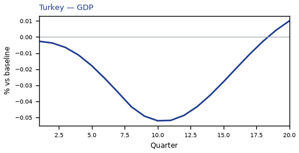
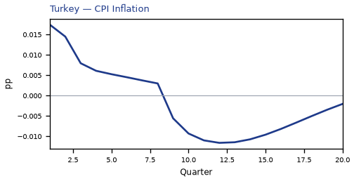
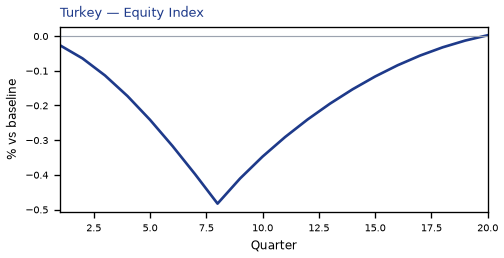
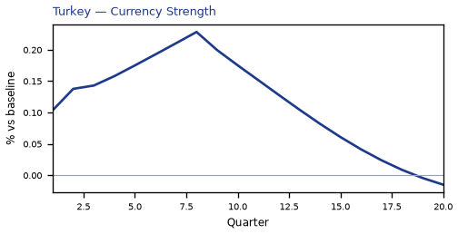
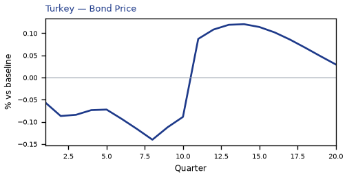
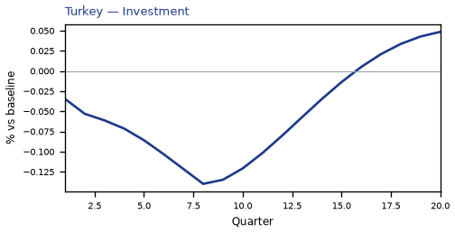
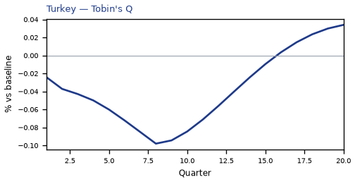
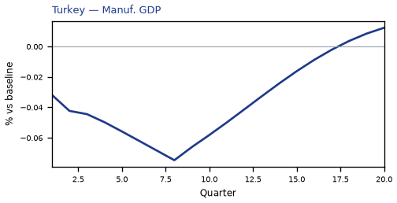
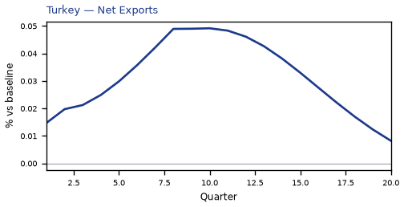
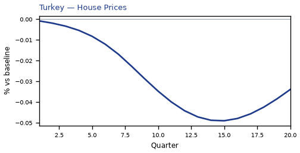
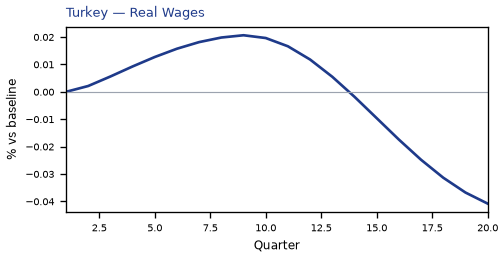

source=live · global_macro_v5 · contract v6 · Q1–Q20 JSON · not financial advice